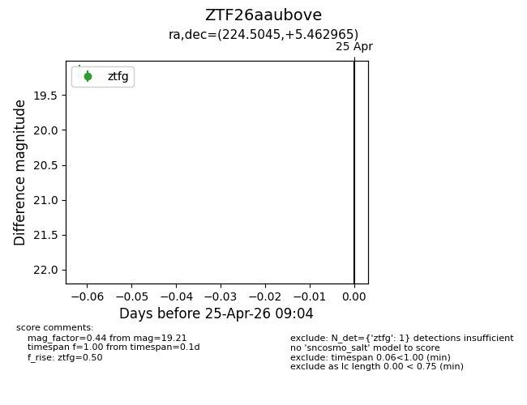
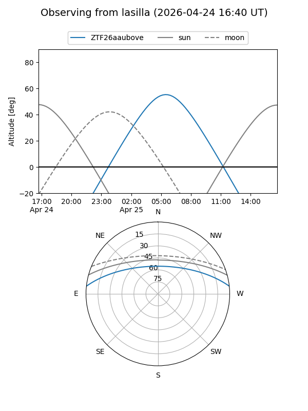
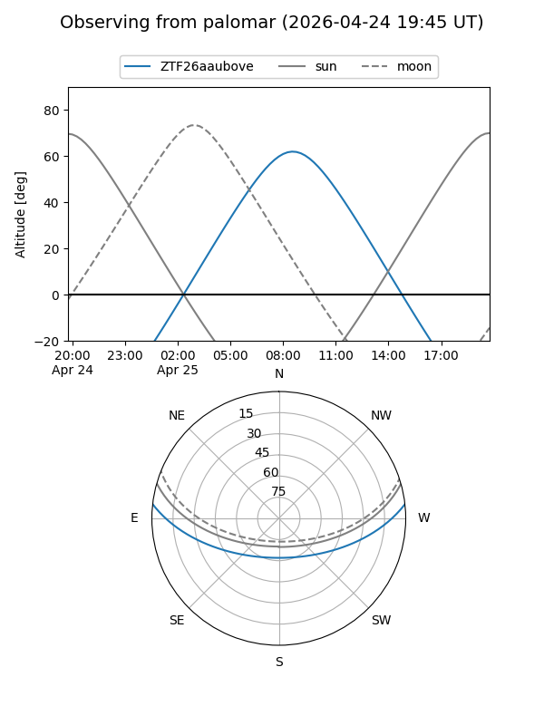

ZTF26aaubove
Target ZTF26aaubove at 2026-04-25 09:06
Aliases and brokers:
FINK: link
Lasair: link
ALeRCE: link
alt names
ZTF26aaubove (ztf,fink_ztf)
Coordinates:
equatorial (ra, dec) = 224.5045,+5.46296
equatorial (HMS+DMS) = 14:58:01.08,+05:27:46.67
galactic (l, b) = (2.9188,+52.90434)
Flags:
Photometry:
last ztfg=19.21
1 ztfg detections
Lightcurve

Visibility


Additional plots